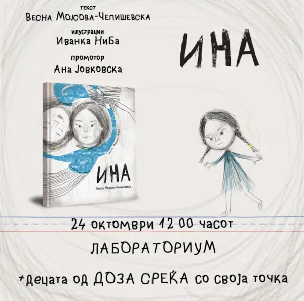
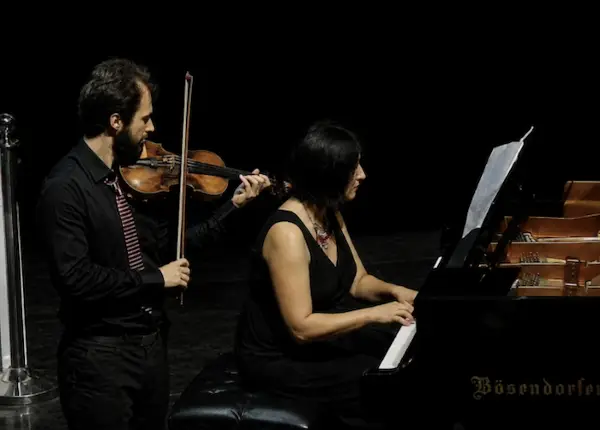
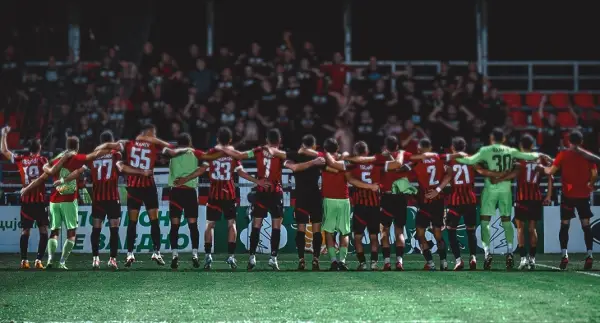

Главен фид на вести
Милошоски: Македонија ги зацврстува стратешките врски со САД и ја потврдува усогласеноста со ЕУ
Јас мислам дека Македонија е добро позиционирана и по однос на стратешкото партнерство со САД и по однос на нашата политичка економска културна континентална поврзаност со ЕУ и ...
Манасиевски: Каде се анкетите на Венко што рече дека ќе ги обзнани во јавноста уште пред две недели?
Го прашуваме Филипче, каде се тие негови анкети во кои СДС има голем пораст во рејтингот, а ВМРО-ДПМНЕ пад? ВМРО-ДПМНЕ и претседателот Мицкоски имаат најголема поддршка од граѓа...
СДСМ: Следуваат нови поскапувања, а Мицкоски ги одбива сите мерки за поголеми плати и помош на граѓаните
Во октомври синдикалната минимална кошничка е над 70. денари, а со кирија за стан од 60 квадратни метри изнесува скоро 90. борозан Ниту три плати не се доволни да се покријат ос...
ВМРО-ДПМНЕ: Филипче бара утеха во пласманот од четврто место во Брвеница додека СДС ја направи партија која слави порази
Филипче и СДС се обидуваат да најдат утеха во пласманот на четвртото место, се вели во соопштението на ВМРО-ДПМНЕ во кое додаваат дека „СДС со Филипче се сведе на рејтинг од 5% ...
Сиљановска-Давкова во Будимпешта: Унгарската револуција е траен симбол на борбата за слобода и достоинство
Претседателката Гордана Сиљановска-Давкова присуствуваше на одбележувањето на 70-годишнината од Унгарската револуција од 1956 година во Будимпешта. За Сиљановска-Давкова Унгарск...
Берово утрово најстуден град во земјава, измерени минус 1 степен
Најстудено утрово е во Берово, каде што се измерени -1 степен Целзиусов, а во останатите градови температурата се движи од 1 до 7 степени, информираат од Управата за хидрометеор...
Во реновираниот „Стив Наумов“ откорнале радијатор, пушеле и активирале аларм поради заборавена храна во микро
Раководството на домот се соочи со запушена канализација поради фрлени влажни марамици; активиран алармен систем поради заборавена храна во вклучена микробранова печка во чајна ...
УЈП започна со проверки за приливите од странство на граѓаните остварени во текот на 2021 година
Обврската за пријавување на доходот се однесува на физичките лица кои оствариле доход од странство што подлежи на оданочување согласно ЗДЛД, вклучително и доход по основ на: •до...
УЈП започна контроли на приходите од странство во текот на 2021 година
УЈП ги повикува граѓаните што примиле средства од странство да проверат дали имаат даночна обврска и, доколку е потребно, електронски да поднесат пресметка на аконтацијата на да...
Весникот „Телеграф“ укинува работни места за да стане „медиум управуван од вештачка интелигенција“
Британскиот весник „Телеграф“ ќе отпушти дел од персоналот поради новите планови за трансформирање во „глобална, управувана од вештачка интелигенција“ медиумска и информативна к...
11 ден протести во Тирана: Се бара безусловна оставка од Рама
Студенти, предавачи и граѓани веќе 11 дена протестираат во Тирана против актуелната политичка гарнитура, барајќи оставка од Рама, како и подобри услови за образование и живот. Д...
Бугари измамиja 79-годишна жена кај Дубровник – и собраа 8.000 евра за „операција на нејзината внука“
Жена (79) од околината на Дубровник остана без 8. евра откако измамници ја убедија дека нејзината внука е тешко повредена и дека итно се потребни пари за операција. Хрватската п...
Лекари и студенти по медицина се приклучија на протестите против владата на Рама
Лекари, студенти по медицина и сестринство, заедно со универзитетски професори, денеска маршираа кон канцеларијата на премиерот Еди Рама во Тирана. Демонстрантите бараат оставка...
Пентагон ги прогласи Институтите „Конфучие“ во САД за закана за националната безбедност
Министерството за одбрана на САД ги прогласи културните центри финансирани од Кина на универзитетските кампуси, познати како Институти Конфучие, за закана за националната безбед...
Денеска се одбележува Денот на ОН
Датумот на стапување во сила на основачката Повелба на Обединетите нации, 24 октомври 1945 година, се означува и слави како Ден на ОН. Неговите пет постојани членки се САД, Руси...
Маск: Украинските елити се збогатија, а децата на обичните граѓани се испраќаат во војна
Американскиот претприемач и милијардер Илон Маск објави на Х дека украинските елити се збогатиле, благодарение на стотиците милијарди долари што се влеваат во земјата, додека де...
Oct 23, 2026
Жител на Тисовица се обидел сам да го изгаси пожарот, куќата изгорела
Вчера во 18:00 часот во СВР Скопје било пријавено дека околу 13:00 часот во селото Тисовица, општина Зелениково, настанал пожар во куќа, сопственост на Р. Е. од Тисовица, кој се...
Усвоен кварталниот извештај за извршување на Буџетот на општина Карпош за 2026 година
По тој повод, Општина Карпош ќе додели и парична награда во висина од 20. денари, на еден полициски службеник од Полициската станица – Карпош, за неговиот придонес во непречено ...
Градоначалничката се сретна со станарите: Ги унапредуваме колективните живеалишта
На иницијатива на Општина Кисела Вода, со цел унапредување на условите во колективните живеалишта, на состанокот присуствуваа и општинските инспекциски служби, како и претседате...
ОД БИТОЛА ДО МАКЕДОНСКИТЕ ТЕАТАРСКИ И ФИЛМСКИ СЦЕНИ – ЖИВОТНАТА ПРИКАЗНА НА ЈОВИЦА МИХАЈЛОВСКИ
Меѓу нив е и Јовица Михајловски, актер со впечатлива кариера, препознатлив глас и особен талент за создавање ликови што публиката ги памети со години.
„МОЈОТ ГАЛЕБ“ – НОВО МУЗИЧКО ОСТВАРУВАЊЕ НА БИТОЛСКИОТ КОМПОЗИТОР КАЛИЦА
Битолската музичка сцена е побогата за уште едно авторско остварување.
Две сообраќајни несреќи во близина на Битола – две лица тешко повредени
Извршен е увид од увидна екипа на СВР Битола.
На „Табановце“ уапсен Србин кој во јули бил фатен како вози 166 км/час каде што е дозволено 80
на автопатот Гевгелија – Демир Капија, М. П. го управувал возилото со брзина од 166 километри на час на место каде максимално дозволената брзина изнесува 80 километри на час. То...
Апсење на автопатот Гостивар–Тетово: со „ролс-ројс“ возел 194 км/ч каде што се дозволени 80
Министерството најавува продолжување на засилените сообраќајни контроли и апелира возачите да ги почитуваат ограничувањата на брзината и сообраќајните правила. етириесет и четир...
Ужас во Скопје: Маж пронајден мртов во својот дом во Ѓорче Петров, лекарите констатирале траги на насилство
Вчера во 18:40 часот во СВР Скопје било пријавено дека во својот дом на подрачјето на општина Ѓорче Петров во Скопје бил пронајден починат С. Ј. Лекар од Итна медицинска помош к...

Промоција на книгата „Ина“ од Весна Мојсова-Чепишевска
Книгата за деца „Ина“ од Весна Мојсова-Чепишевска, со илустрации на Иванка НиБа и во издание на „Светулка“, ќе биде промовирана на денеска во „Лабораториум“ во Скопје. За книгат...

„Златна лира 2026“: Концерт на Момчило Куфојанакис – виолина Весна Ангелова Христов – пијано
Концерт на Момчило Куфојанакис – виолина Весна Ангелова Христов – пијано Сабота, 24 октомври, 20 часот, Музеј на македонската борба Вечер на виолина и пијано со Момчило Куфојана...
Почина јапонскиот писател Рју Мураками, познат по истражувањето на темната страна на луѓето
Јапонскиот писател, сценарист и режисер Рју Мураками, чии дела ја истражуваат темната страна на човечката природа, отуѓеноста, насилството, субкултурата, злоупотребата на дрога ...
Алгоритмот не е неутрален: како интернетот ни ја обликува сликата за светот
Проверете дали сигурното тврдење во насловот во содржината станува само можност.
Корисниците на Claude велат дека ова им е најкорисната работа – што мислите вие?
Текстот Корисниците на Claude велат дека ова им е најкорисната работа – што мислите вие?
Електричното семејство на VW заедно во Париз
Германскаа групација на автомобили Volkswagen, за прв пат на едно место, а тоа беше Саемот за автомобили во Париз, ги собра своите четири члена на електричното семејство – CUPRA...
Холивуд е валкано место, полно со скршени надежи и срца, но и екстремно богати луѓе – вели македонскиот актер Крис Петровски
Се преселив на Нов Зеланд кога имав пет години, па долго време тоа беше македонскиот јазик, но во тинејџерските години, тоа се промени во англиски.
Холивуд е полн со скршени луѓе и изгубени соништа, но и екстремно богати, вели актерот Крис Петровски, Македонец пораснат во Нов Зеланд
Актерот Крис Петровски (1991 година, Битола), неодамна стана дел и од актерската екипа на хорор филмот на Netflix „The Boy in the Iron Box“, продуциран од Гиљермо дел Торо, заед...
(ВИДЕО+ФОТО) Импресивен концерт на „Меморија“ во „Јане Сандански“
Денот на македонската борба „Меморија“ го одбележа со концерт, кој воедно беше и прослава на нивната 40. годишна работа, во арената „Јане Сандански“ на радост на публиката која ...
Санчо во Хетафе за 25 пати помала плата од онаа што ја имаше во Манчестер Јунајтед
Крилниот напаѓач од Англија му се придружи на Манчестер Јунајтед во летото 2021 година во трансфер вреден 85. евра по одличниот период во Борусија Дортмунд, каде што постигна 49...

Шкендија пред дербито со Вардар ги повика навивачите на фер-плеј навивање
Нашата публика воопшто, а особено „Балистите“ традиционално се покажаа како голема поддршка за тимот и не се сомневам дека така ќе биде и на овој натпревар. Убеден сум дека може...
Кристијано Роналдо е првиот фудбалер со заработка над две милијарди фунти
Португалскиот фудбалер и на 41-годишна возраст останува најплатениот фудбалер во светот, со проценети годишни приходи од 225 милиони фунти. Зад него на листата се наоѓа Лионел М...
Саботен хороскоп: Јарците ќе се фрлат на мислење, Стрелците на шетање
Во љубовта ве очекува интересен разговор кој може да го промени вашиот поглед на една личност. Финансиски, избегнувајте импулсивно купување и посветете време на одмор.
Се роди бебе со мустаќи- снимката предизвика реакции низ целиот свет (ВИДЕО)
Сепак, ова не значи дека виралното видео може автоматски да се објасни со овој феномен.
Нови детали од скандалот во Турција: Сопругата на Мустафа Сандал и нејзиниот татко сакаат да ги вратат спорните 54 милиони евра
Адвокатите на Мелис Сутшуруп Сандал, сопругата на турскиот пејач Мустафа Сандал, и на нејзиниот татко Џихан Сутшуруп, се обратиле до Главното јавно обвинителство во Истанбул со ...